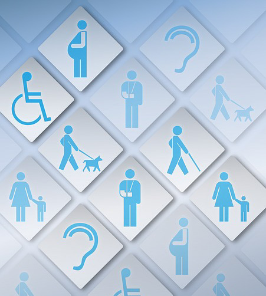

Our Commitment to Accessibility
At Computer Systems Inc., we believe everyone should have equal access to information and technology. We are committed to creating an inclusive website that is easy to navigate and use for visitors with different abilities.

Web Users and Web Accessibility
People experience the internet in different ways. Understanding accessibility barriers helps us create websites that everyone can use.
| Disability | Description | Common Barriers | Accessibility Principles to Apply |
|---|---|---|---|
| Auditory | People who are deaf or hard of hearing. | Audio-only information, videos without captions, and alerts that rely only on sound. | Perceivable: Provide captions, transcripts, and visual alerts for audio information. |
| Cognitive and Neurological | People with learning disabilities, memory difficulties, attention disorders, or neurological conditions. | Complex navigation, confusing instructions, distracting animations, and complicated language. | Understandable: Use clear language, consistent navigation, simple instructions, and predictable layouts. |
| Physical | People with limited mobility, strength, coordination, or use of their hands. | Small clickable areas, mouse-only navigation, and forms that require precise movements. | Operable: Make all website features accessible using a keyboard and provide sufficient time to complete tasks. |
| Speech | People who have difficulty producing speech or communicating verbally. | Websites that require voice commands or spoken responses to complete tasks. | Operable: Provide alternatives to voice interaction, including text-based communication and forms. |
| Visual | People who are blind, have low vision, or have color vision deficiencies. | Missing image descriptions, poor color contrast, small text, and websites that cannot be used with screen readers. | Perceivable: Provide alternative text, readable text, sufficient color contrast, and screen-reader compatibility. |